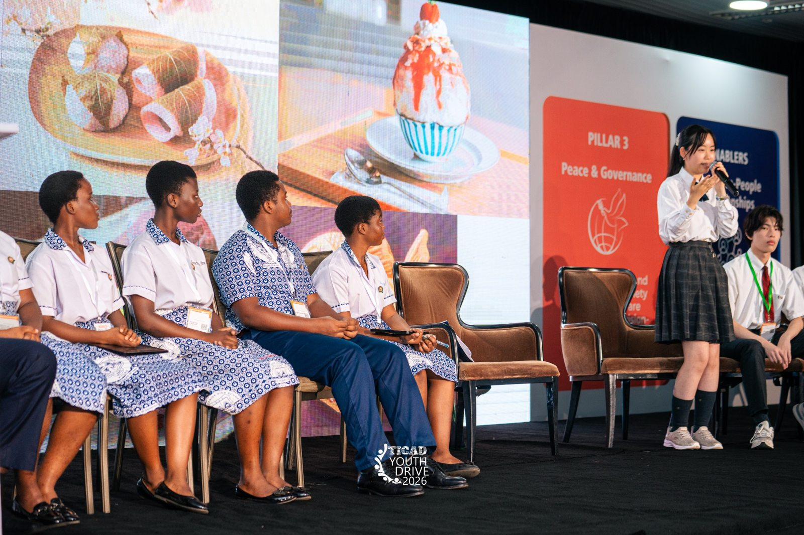
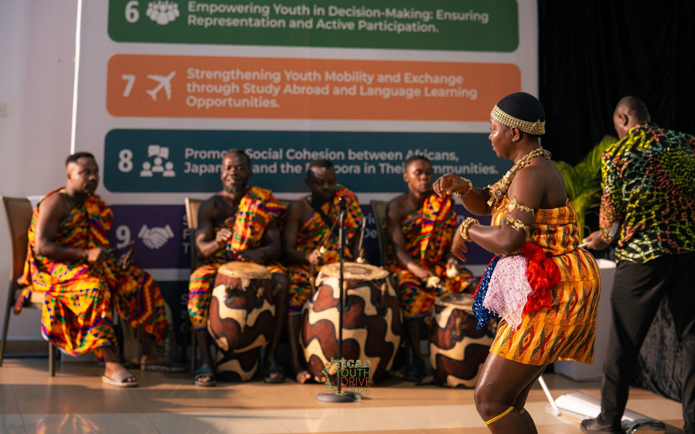
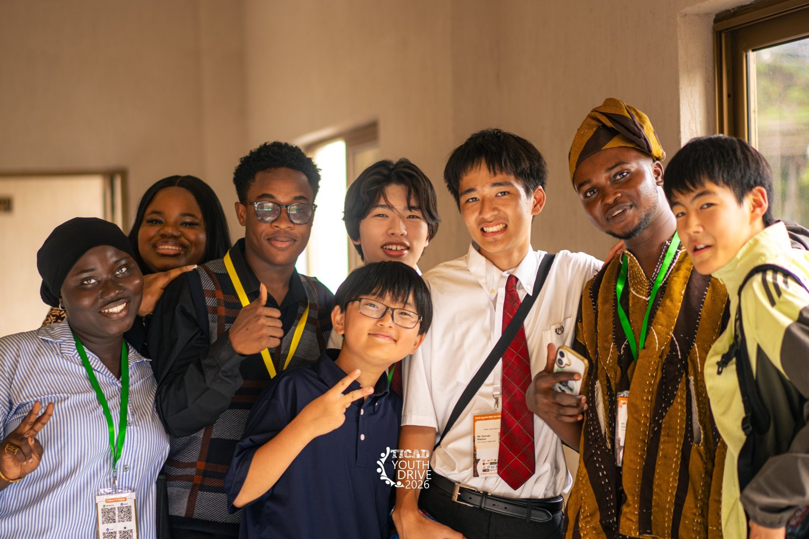
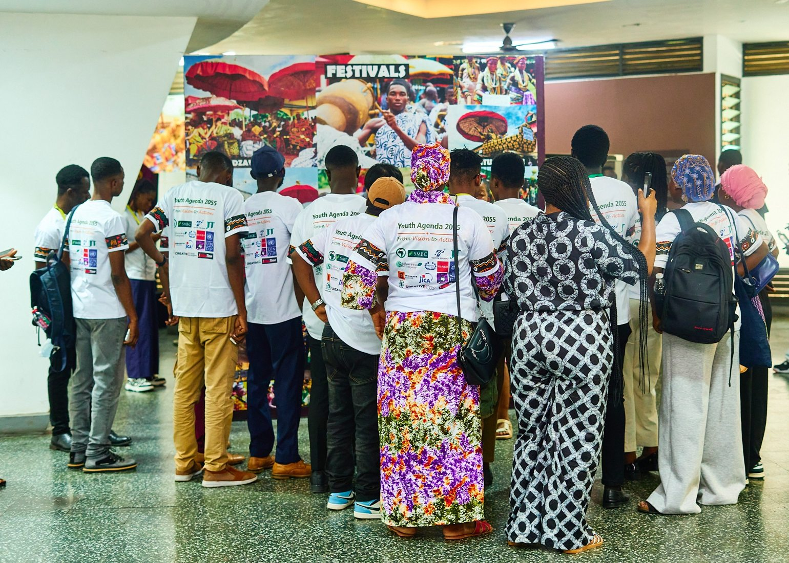

AFRICA & JAPAN YOUTH ALLIANCE
Connecting Youth.
Driving Change.
Connecting young people across Africa and Japan to turn ideas into action.
From Ideas to Action. From Action to Impact.
YOUTH AGENDA 2055 / OUR SHARED DIRECTION
Youth Agenda 2055
Three pillars and two cross-cutting enablers guiding long-term Africa–Japan youth collaboration.
THREE PILLARS
Economy
Peace & Stability
TWO CROSS-CUTTING ENABLERS
Africa–Japan People-to-People Connections
Sustainability
HOW AJYA WORKS / PROPOSED FRAMEWORK
From Youth Voices to Real Impact
The July 2026 AJYA launch proposal outlines three complementary mechanisms. Their operational status will be updated as plans are confirmed.
TICAD Youth Advisory Board
A proposed channel for youth participation in policy dialogue and decision-making.
Youth TICAD & Youth Drive
Flagship opportunities to bring youth voices into dialogue, build networks and share ideas.
TICAD Youth Fund
A proposed funding mechanism to help youth-led ideas move toward implementation.
01 / WHO WE ARE
A community built for action.
AJYA is a youth-led platform established in 2026 to strengthen collaboration between Africa and Japan and support youth-led action toward Youth Agenda 2055.
LEARN ABOUT AJYA →Connect
Bring together young people and organizations across Africa and Japan.
Collaborate
Build relationships and share knowledge across borders.
Act
Support youth-led ideas as they move toward practical action.
02 / OUR WORK
Dialogue. Partnership. Impact.

TICAD YOUTH DRIVE 2026
A new chapter for Africa–Japan youth collaboration
AJYA was officially launched during TICAD Youth Drive 2026 in Accra, Ghana. Explore the event and the ideas that brought young people together.
EXPLORE OUR WORK →03 / PROJECTS
Ideas into Action
AJYA.
MEMBER INITIATIVES
A space to share progress and create connections
We aim to showcase youth-led projects, their progress and opportunities to collaborate. Project profiles will be added as they are confirmed.
04 / NEWS & REPORTS
Our Journey
TICAD Youth Drive 2026
The event where AJYA was officially launched.
Youth TICAD 2025
Youth dialogue and proposals that preceded AJYA's establishment.
05 / MOMENTS
Our Community in Action
Moments of dialogue, collaboration and connection across Africa and Japan.



Photos from TICAD Youth Drive 2026 in Accra, Ghana. The event was organized by ADNJ and AAYN; AJYA was launched during the event.
06 / ORGANIZATIONS
Organizations in Our Wider Network
Organizations proposed for inclusion, subject to confirmation of their relationship to AJYA or related youth initiatives. This list does not imply formal sponsorship or endorsement of AJYA.
 UNDP
UNDP JICA
JICA AAYN
AAYN ADNJ
ADNJ SMBC
SMBC JT
JT 渋沢アンドカンパニー
渋沢アンドカンパニー 豊田通商
豊田通商Draft only: confirm the appropriate category, wording and logo permissions before publishing.
PARTNERSHIP INFORMATION →07 / GET INVOLVED
Let's create impact together.
Interested in connecting, sharing a project or exploring a partnership? Get in touch with AJYA.
CONTACT AJYA →